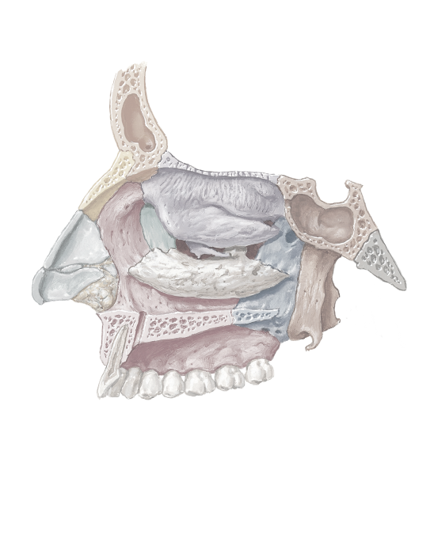

Frontal bone (sinus)
Nasal bone
Major alar cartilage
Maxilla (Frontal process; Incisive canal; Palatine process; Alveolar process)
Inferior nasal concha bone
Palatine bone (Perpendicular plate; Horizontal plate)
Sphenoid bone (Sinus of sphenoid bone; Medial pterygoid plate; Lateral pterygoid plate; Pterygoid hamulus)
Basilar part of occipital bone
Opening into maxillary sinus
Sphenopalatine foramen
Sella turcica (for pituitary gland)
Ethmoid bone (Bony middle nasal concha; Cribriform plate; Bony superior nasal concha)
Lacrimal bone
1
2
3
4
5
6
7
8
9
10
11
12
13